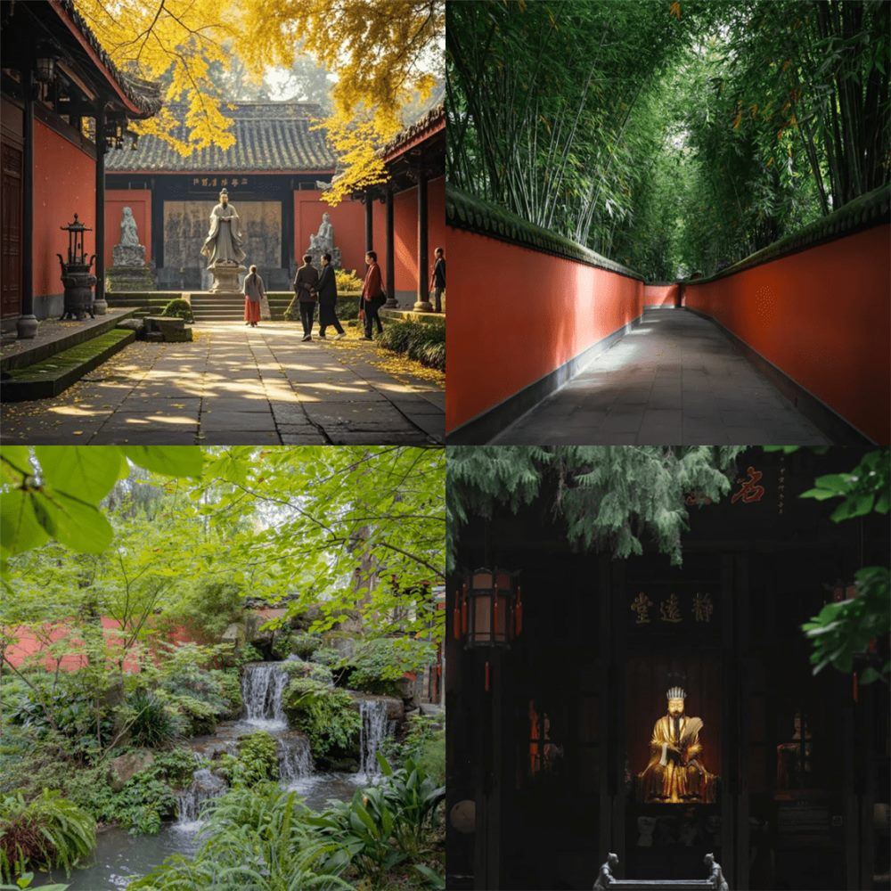
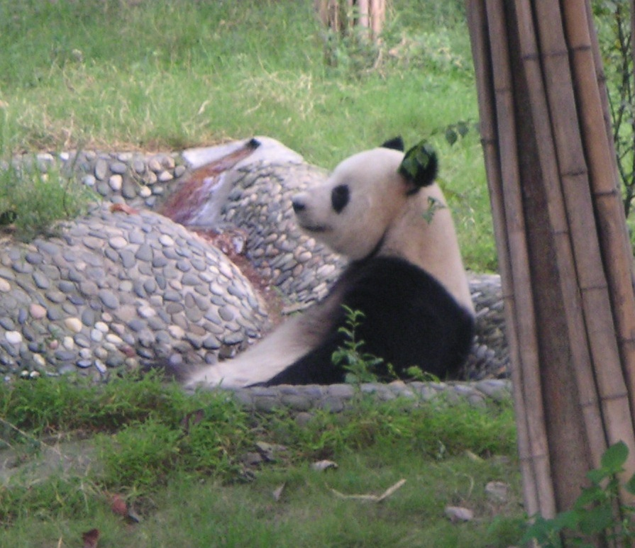
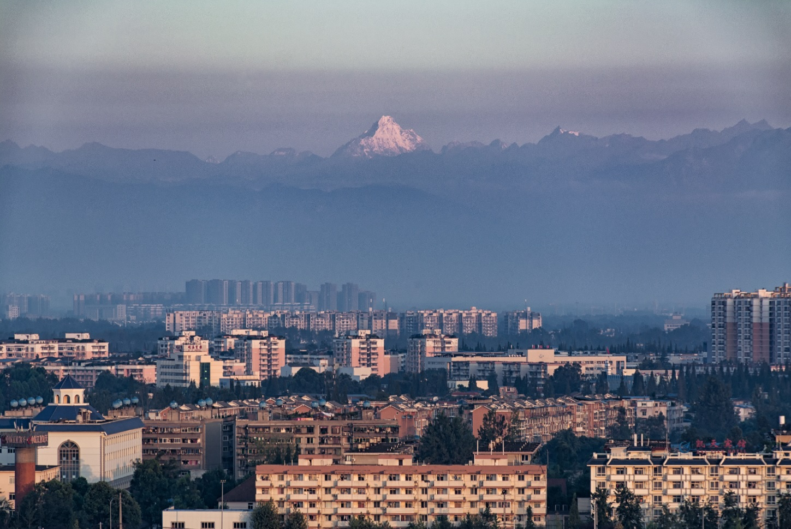
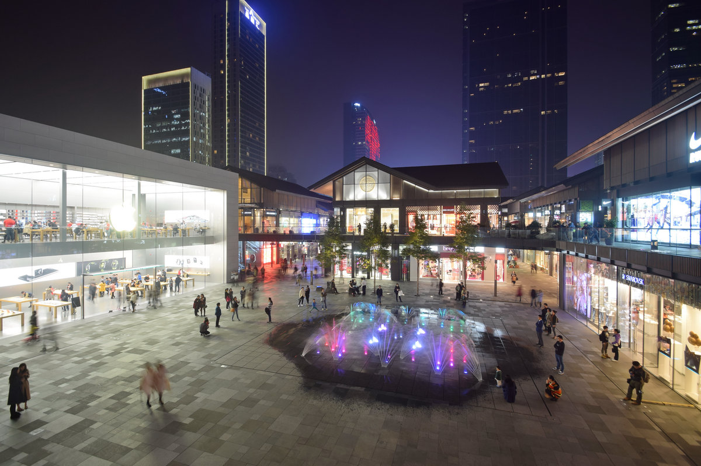
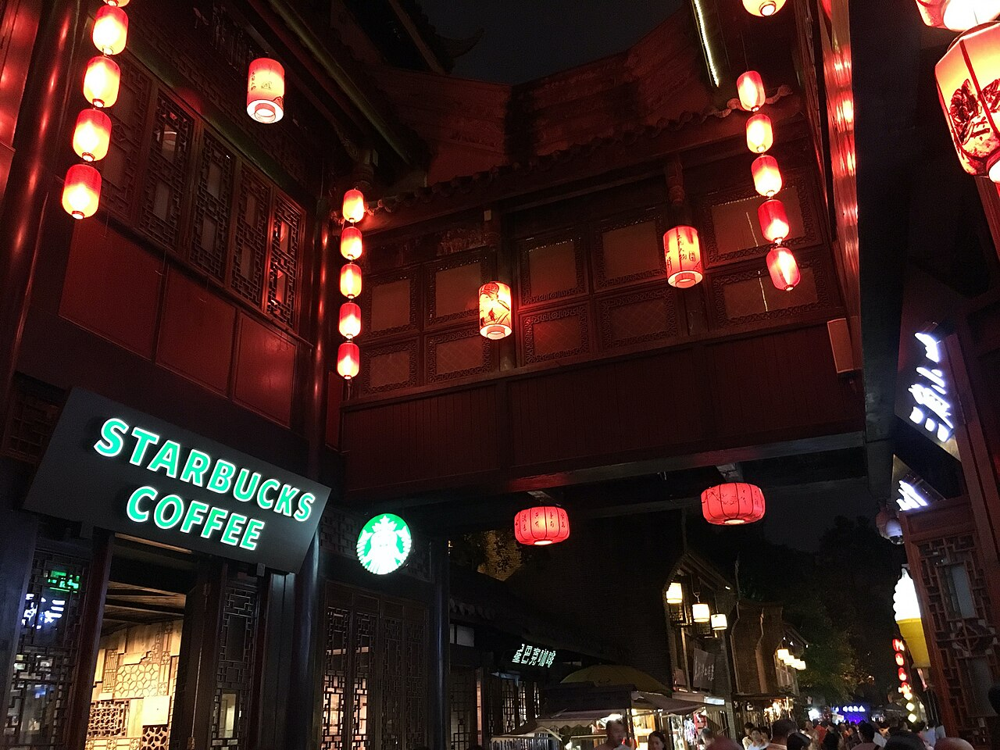
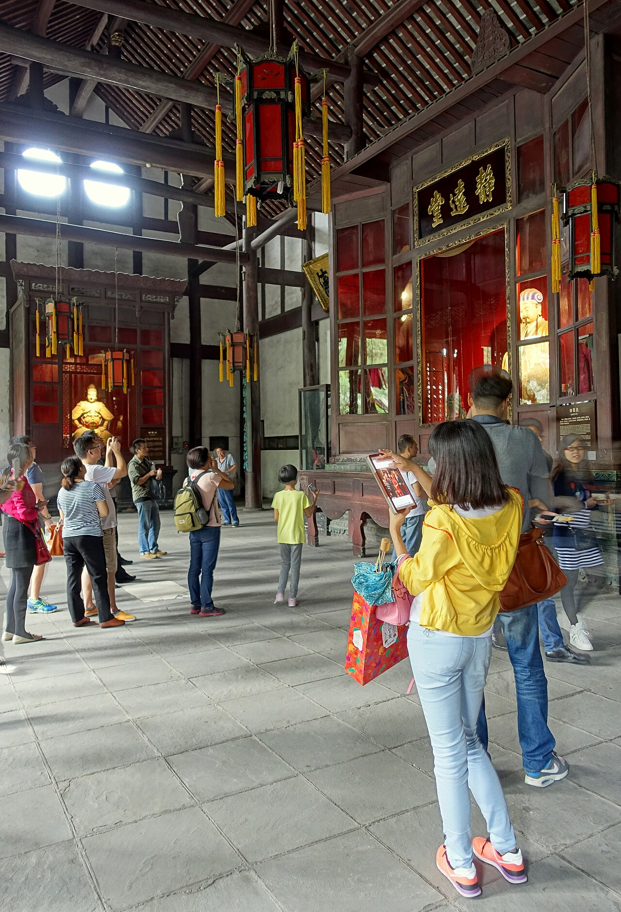
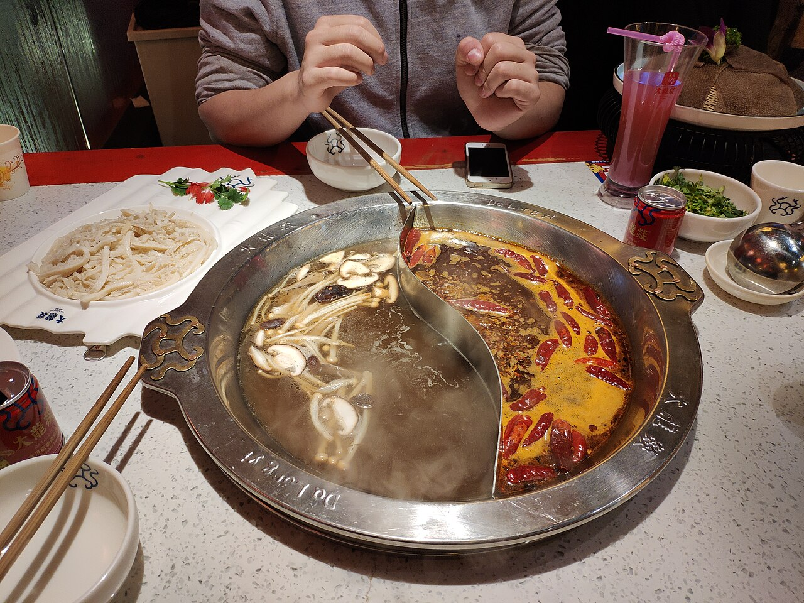
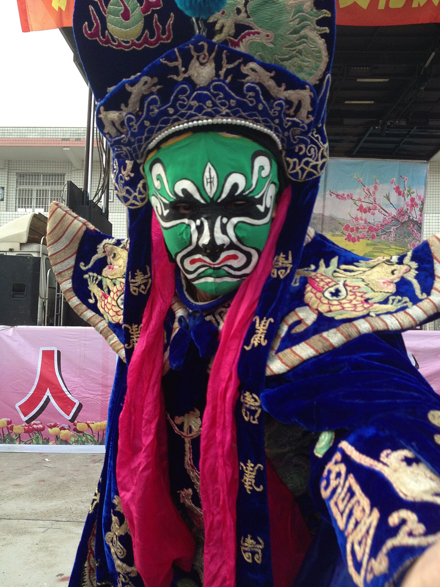

11/02（一）抵達成都
台中 RMQ → 香港 HKG → 成都雙流 CTU
⛅ 成都 14–20°C・局部多雲・降雨 5%
- 台中起飛 UO173，15:00 抵香港 T1
- 香港起飛 CX916，轉機約 4 小時，可在機場吃晚餐
- 抵達成都雙流 T1 → 前往飯店入住
天氣為出發前查到的預報，僅供參考，當天請再確認。按「詳細行程」可看地圖連結和完整安排。
台中 RMQ → 香港 HKG → 成都雙流 CTU
⛅ 成都 14–20°C・局部多雲・降雨 5%

辦手機門號、銀行卡 ・ 玉林街 ・ 春熙路＋太古里
🌤️ 成都 14–20°C・午前多雲，午後晴朗・降雨 7%
高鐵＋商務車接駁進九寨溝
⛅ 九寨溝 10–19°C・局部多雲・降雨 24%
門票已訂（小程序：九寨溝旅遊訂票）
☁️ 九寨溝 9–18°C・多雲・降雨 24%
回成都 ・ 金色印象按摩 ・ 休息
⛅ 九寨溝 11–19°C・局部多雲 ／ 成都 15–20°C・多雲・降雨 18%
春熙路搭大巴直達四姑娘山鎮
⛅ 四姑娘山（小金縣）6–17°C・局部多雲・降雨 24%

門票已訂（小程序：阿壩旅遊訂票）
🌦️ 四姑娘山（小金縣）5–14°C・午前有陣雨・降雨 33%
寬窄巷子 ・ 奎星樓街 ・ 武侯祠 ・ 錦里 ・ 東郊記憶 ・ 蜀宴賦
🌤️ 成都 13–18°C・午前多雲，午後晴朗・降雨 23%


成都雙流 CTU → 香港 HKG → 台中 RMQ
☁️ 成都 13–19°C・多雲・降雨 20%
去程 11/02（一）
回程 11/11（三）
| 日期 | 區段 | 時間 | 狀態 |
|---|---|---|---|
| 11/04 | 高鐵 C5752 一等座 成都東 → 黃龍九寨 | 11:46 → 13:43 | 已訂 |
| 11/04 | 商務車接駁 黃龍九寨站 → 九寨溝 | 14:10 出發・約 2 小時 | 已訂 |
| 11/06 | 商務車接駁 九寨溝 → 黃龍九寨站 | 11:00 出發・約 2 小時 | 已訂 |
| 11/06 | 高鐵 C5754 一等座 黃龍九寨 → 成都東 | 14:14 → 16:37 | 已訂 |
| 日期 | 區段 | 說明 | 狀態 |
|---|---|---|---|
| 11/07 | 大巴 春熙路文創市集 → 長坪溝 | 08:10 上車・約 4–6 小時 | 已訂 |
| 11/07 | 長坪溝 → 民宿 1.8 km | 步行 24 分・或小黃車 ¥15／人 | 現場 |
| 11/08 | 四姑娘山鎮 → 雙橋溝 | 需另外找接駁 | 現場找 |
| 11/08 | 大巴 雙橋溝 → 成都金科北路 | 17:30 上車 | 已訂 |
| 11/08 | 地鐵 2 號線 → 飯店 | 約 11 站・25 分・¥5／人 | 現場 |
備案：成都往四姑娘山的直達旅遊車也可從 茶店子客運站 出發（約 ¥120／人）。
中國 eSIM 10 天・總 20 GB（中港澳）× 2 已買
D1–D2 ・ 11/02–11/04 ・ 2 晚
豪華大床房・65 m²・無早餐
廚房・大冰箱・洗衣機＋烘衣機・微波爐・100 吋投影・藍牙音響・智能馬桶
✅ 已付款 NT$2,816 ・ 11/02 12:00 前可免費取消
D3–D4 ・ 11/04–11/06 ・ 2 晚
雅緻雙床房・26 m²・含早餐
九寨溝 火地壩風景區旅遊客運中心（623400）
✅ 已付款 NT$3,542 ・ 不可取消
D5 ・ 11/06–11/07 ・ 1 晚
歡歡特大床套房・68 m²・無早餐
成都 錦江區 東御街 88 號 星滙廣場 4 單元 1 樓
廚房・大冰箱・洗烘一體機・微波爐・巨幕投影・頂噴花灑
💳 預計 11/04 扣款 NT$1,205 ・ 11/06 18:00 前可免費取消
D6 ・ 11/07–11/08 ・ 1 晚
拂曉暖舍｜觀景投影大床房・38 m²・無早餐
小金縣 四姑娘山鎮 金鋒村 1 組 13 號
👉 從「山友之家」旁邊的路口進去
智能馬桶・乳膠床墊・觀景投影
💳 預計 11/05 扣款 NT$1,385 ・ 11/07 18:00 前可免費取消
D7–D9 ・ 11/08–11/11 ・ 3 晚
翡冷翠一室一廳套房・70 m²・無早餐
成都 錦江區 下東大街 99 號 晶融匯公寓
廚房・大冰箱・洗衣機＋烘衣機・微波爐・100 吋投影・乳膠床墊
💳 預計 11/06 扣款 NT$4,741 ・ 11/08 12:00 前可免費取消
標有 📍 的名稱都可以點，直接開高德地圖導航。

開放式購物街區、精品品牌、咖啡廳、潮流店。

傳統院落、青磚巷弄、茶館、文創店。商業化重，建議只拍照，把胃留給下一站。

紅燈籠、仿古街道、民俗表演和小吃，晚上散步拍照最美，可搭配武侯祠。

三國蜀漢文化聖地，就在錦里旁邊。
老工廠改建的文創園區，在城東。
錦江邊的夜景和酒吧街，離太古里不遠。


必看！尚未排進行程，可放在 D8 或 D9 晚上。
HiFi 影音・足療按摩。龍手足道 ¥186／印象貴足 90 分鐘 ¥216（多頭肩頸 15 分鐘）。排在 D5 晚上。
勾選會記在這支手機的瀏覽器裡。